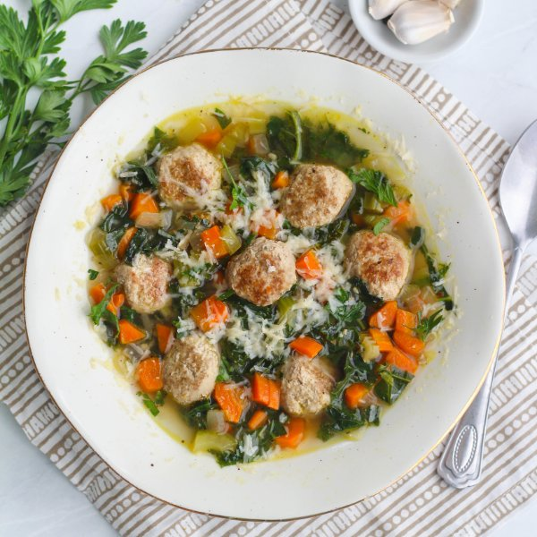

Italian Wedding Soup with Turkey Meatballs & Kale

Nutrition (per serving)
525.7 kcalCalories
52.6 gProtein
23.1 gCarbs
27.3 gFat
Full nutrition table
| Calories | 525.7 kcal |
| Total fat | 27.3 g |
| Saturated fat | 7.7 g |
| Trans fat | 0.4 g |
| Cholesterol | 127 mg |
| Sodium | 330.9 mg |
| Carbohydrates | 23.1 g |
| Fiber | 4.1 g |
| Sugars | 4.7 g |
| Protein | 52.6 g |
| Potassium | 1487.2 mg |
| Calcium | 214.2 mg |
| Iron | 5.8 mg |
| Vitamin A | 334.9 IU |
| Vitamin C | 121.5 mg |
| Vitamin D | 26.5 IU |
Cookware
Ingredients
- 2 mediumcarrots
- 2 stickscelery
- 64 fl ozchicken or vegetable broth
- 4 clovesgarlic
- 1 ½ lbground turkey
- 1 small bunchItalian (flat-leaf) parsley
- 2 buncheskale
- 2 ozParmesan cheese
- 1 mediumyellow onion
- black pepper
- crushed red pepper
- extra virgin olive oil
- Italian seasoning
- salt
Steps
- Wash and dry the fresh produce.2 medium carrots
2 sticks celery
2 bunches kale
1 small bunch Italian (flat-leaf) parsley - Trim off and discard the ends of the celery; small dice the celery (cut into ¼-inch cubes) and transfer to a medium bowl.
- Peel the carrots, then trim off the ends; discard the peels and trimmings. Small dice the carrots (cut into ¼-inch cubes) and add to the bowl with the celery.
- Preheat a large pot over medium heat.
- While the pot heats up, trim off and discard the ends of the onion and remove the outer layer; small dice the onion (cut into ¼-inch pieces) and add to the bowl with the celery and carrots.1 medium yellow onion
- Trim off and discard the root ends of the garlic; peel and mince or press the garlic. Add to the bowl with the other vegetables.4 cloves garlic
- Once the pot is hot, add olive oil and swirl to coat the bottom.1 tbsp extra virgin olive oil
- Add the carrots, celery, onion, and garlic to the pot; season with salt and pepper. Cook, stirring occasionally, until the vegetables are softened, 5 to 6 minutes.½ tsp salt
¼ tsp black pepper - Finely grate about 1 ½ cups of Parmesan and transfer to a small bowl.2 oz Parmesan cheese
- Preheat a skillet over medium heat.
- In a medium bowl, combine the ground turkey, ¾ of the grated Parmesan (save the rest for garnishing), salt, and pepper; mix together until well combined. Form the mixture into meatballs, each about 1 inch in diameter.1 ½ lb ground turkey
½ tsp salt
½ tsp black pepper - Once the skillet is hot, add olive oil and swirl to coat the bottom.1 tbsp extra virgin olive oil
- Add the meatballs to the skillet; cook, turning occasionally, until browned on all sides (they don't need to be cooked through), 5 to 7 minutes. Once done, transfer to a bowl.
- Once the vegetables are softened, add broth, Italian seasoning, and crushed red pepper to the saucepan and bring the mixture to a boil.64 fl oz (8 cups) chicken or vegetable broth
1 tsp Italian seasoning
¼ tsp crushed red pepper - Cut out and discard the center stems from the kale leaves; slice the leaves crosswise into 1-inch strips and transfer to a large bowl.
- Once boiling, add the kale and meatballs to the pot; season with additional salt and pepper. Reduce the heat to a simmer and cook until the meatballs are cooked through, 6 to 8 minutes.½ tsp salt
¼ tsp black pepper - Using a knife, shave the parsley leaves off the stems at a downward angle, working away from your body; discard the stems and finely chop the leaves. Stir the parsley into the soup.
- To serve, divide the soup between bowls and garnish with the remaining Parmesan. Enjoy!